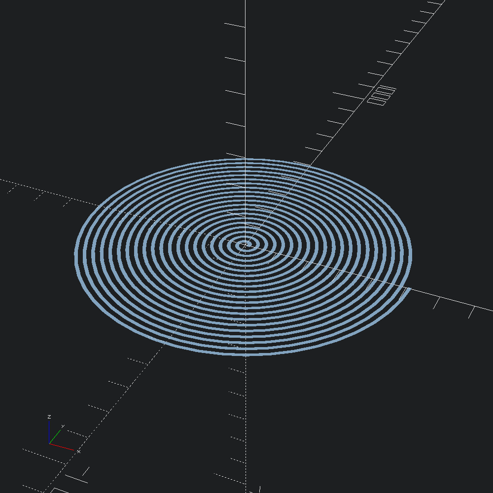

open Scad_ml
let () =
let square = Poly2.square ~center:true (v2 10. 10.)
and step = 0.001 in
let f i =
let t = Float.of_int i *. step in
MultMatrix.(
mul
(vector_rotation (v3 0. 0. 1.) (t *. Float.pi *. 40.))
(translation (v3 (10. +. (500. *. t)) 0. 0.)))
in
let scad =
Mesh.sweep ~transforms:(List.init (Int.of_float (1. /. step) + 1) f) square
|> Mesh.to_scad
in
Scad.to_file "spiral.scad" scad